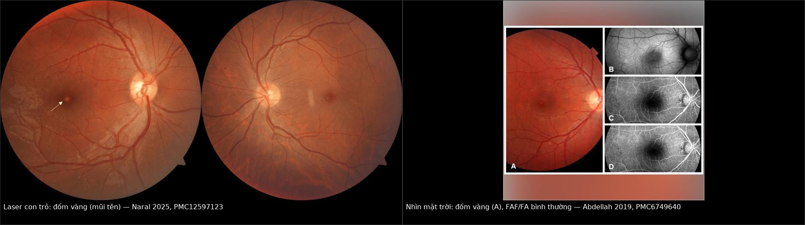
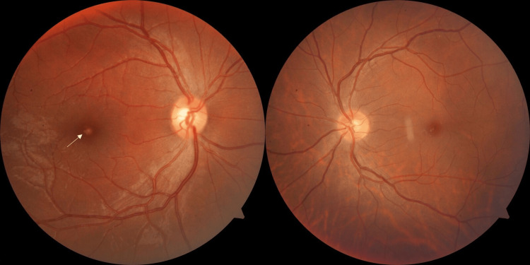
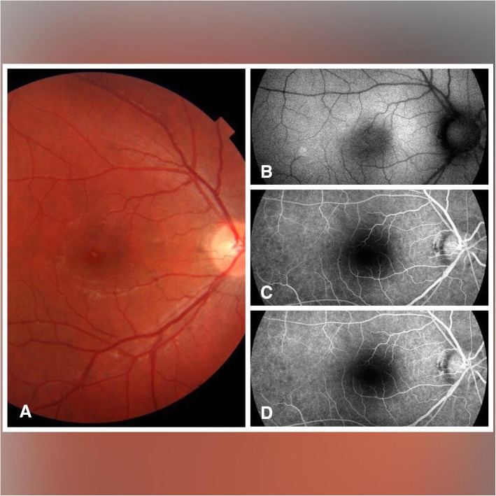
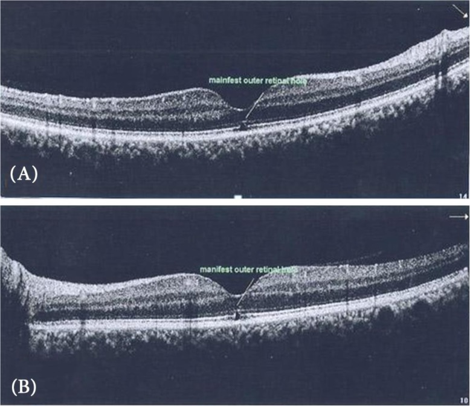
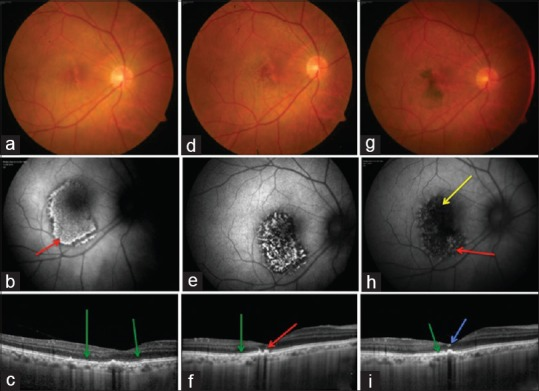
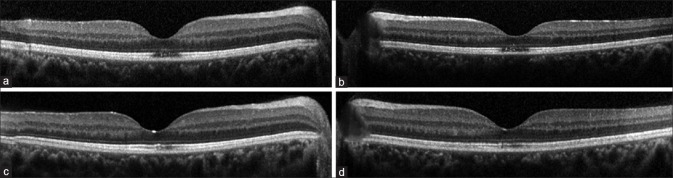

1519 — Bệnh võng mạc do ánh sáng: laser con trỏ, nhìn mặt trời, đèn mổ & điện giật / Photic retinopathy
Tags: pattern:mat-EZ-hoang-diem pattern:lo-vong-mac-ngoai pattern:dom-vang-hoang-diem vung:mat vung:hoang-diem protocol:SD-OCT protocol:FAF protocol:OCTA
Mức chắc chắn (certainty): tổng hợp y văn (literature synthesis) — tự biên từ các bài full-text mở CC BY/CC BY-NC-SA trên Europe PMC, số liệu lấy nguyên từ bài gốc, tên tác giả đối chiếu authorString theo PMCID.
Bài này trả lời “đốm vàng hoàng điểm sau khi nhìn vào nguồn sáng là gì, OCT đọc thế nào, có cần điều trị không”. Khác với 1446 – phù hoàng điểm sau quang đông thể mi (tổn thương do laser y tế có chủ đích) và 1492 – đục bao sau & YAG (laser phá mô có kiểm soát), bài này nói về ánh sáng ngoài ý muốn: laser con trỏ, mặt trời/nhật thực, hàn hồ quang, đèn phẫu thuật — những ca mà “thị lực 20/20” và “đáy mắt gần bình thường” vẫn có thể kèm ám điểm trung tâm vĩnh viễn.
1. Tổng quan bệnh học – cơ chế hình ảnh
1.1 Vì sao chỉ một đốm sáng nhỏ lại đốt đúng hoàng điểm
- Mắt là một thấu kính hội tụ có sẵn: đồng tử giãn 7 mm có diện tích 0,385 cm²; ảnh hội tụ trên võng mạc chỉ rộng ~50 µm (diện tích ~2 × 10⁻⁵ cm²). Tỷ số tập trung năng lượng ≈ 19.000 lần — mọi nguồn sáng đủ mạnh chiếu vào mắt đều bị dồn vào một điểm ở hậu cực. Đây là lý do cùng một nguồn sáng gây bỏng da nhẹ nhưng làm mù điểm vàng.
- Hoàng điểm là nơi dễ tổn thương nhất: mật độ tế bào nón cao nhất, không có mạch máu trong hố trung tâm (nuôi dưỡng hoàn toàn từ màng mạch), chuyển hóa cao, và melanin trong RPE + hắc mạc hấp thụ mạnh bước sóng 400–700 nm → nhiệt và gốc tự do sinh ra ngay tại lớp ngoài võng mạc.
- Ba cơ chế (theo thứ tự thường gặp):
- Quang hóa (photochemical): ánh sáng xanh 400–500 nm kích thích lipofuscin/rhodopsin sinh oxy hoạt hóa (ROS), phá màng tế bào cảm quang. Tổn thương phụ thuộc liều (bức xạ × thời gian), không có ngưỡng nhọn — nên nhìn mặt trời vài chục giây đã đủ, và nhật thực còn nguy hiểm hơn vì ánh sáng môi trường yếu làm đồng tử giãn trong khi ảnh mặt trời vẫn chói.
- Quang nhiệt (photothermal): laser/near-infrared hấp thụ bởi melanosome → nhiệt độ võng mạc tăng; tổn thương xảy ra khi ΔT ≥ 10 °C. Với mặt trời, nhiệt độ tăng không đủ để đông keo — nên tổn thương mặt trời chủ yếu là quang hóa + quang nhiệt tăng cường.
- Quang cơ (photomechanical): chỉ với laser xung cực ngắn (Q-switched, mode-locked) — hiệu ứng sóng âm gây rách mô; không gặp với laser con trỏ liên tục.
- Vì sao tổn thương bắt đầu ở lớp ngoài: đoạn ngoài tế bào cảm quang giàu lipid và có áp suất oxy cao nhất, sát RPE chứa melanin → EZ (ellipsoid zone, ranh giới IS/OS cũ) và IZ (interdigitation zone) mất trước, trong khi các lớp trong còn nguyên. Đây là lý do OCT là phương thức chốt, không phải đáy mắt.
- Vì sao FAF có thể bình thường lúc đầu: FAF đo lipofuscin trong RPE. Ngay sau phơi sáng, tế bào cảm quang đã hỏng nhưng RPE còn sống → FAF bình thường; chỉ khi RPE mất/chết mới giảm tự huỳnh quang. Ca nhìn mặt trời trong bài gốc có FAF và FA bình thường ngay lúc khám (Hình 1).
1.2 Ngưỡng định lượng nằm lòng
- Mặt trời/nhật thực: trong 3.082.727 lượt khám mới, 253 người (0,01%) được chẩn đoán bệnh võng mạc do mặt trời (349 mắt); 62,06% một bên, 73,12% nam, 98,81% người lớn, tuổi hay gặp nhất thập niên 6 (22,13%); 78,8% mắt chỉ giảm thị lực nhẹ/không giảm (< 20/70), 12,89% giảm trung bình (20/70–20/200).
- Tiên lượng mặt trời: 10 mắt/6 bệnh nhân, thị lực lúc vào 0,4–0,9; 100% cải thiện, đạt tối đa và ổn định sau 6 tháng; nhưng lỗ võng mạc ngoài vẫn còn trên OCT ở 80% sau 1 năm.
- Laser con trỏ: 31 mắt/22 bệnh nhân, 45% ≤ 15 tuổi, 41% hai bên, 64% tự chiếu; ám điểm trung tâm 61%; thị lực trung bình 20/50 → 20/40; 55% < 20/40 lúc vào; RPE thay đổi 68%, lỗ võng mạc ngoài 55%, dấu ASHH/anvil 16%, CNV thứ phát 10%.
- Laser ở trẻ (Freiburg): 8 trẻ/11 mắt, tuổi trung bình 12,1 (6–16); thị lực trung vị 20/25; mất liên tục lớp ngoài võng mạc còn nguyên ở 8/11 mắt sau trung vị 18 tháng.
- Khảo sát Vương quốc Anh: 159 ca tổn thương do laser con trỏ (85% nam, 80% < 20 tuổi); 36% giảm thị lực trung bình (6/18–6/60), 17% giảm nặng (< 6/60).
- Công suất thực vs nhãn: một thiết bị ghi “< 5 mW, Class III” đo được 80–90 mW (gấp ≥ 16 lần nhãn); một thiết bị khác ghi “Class II, < 1 mW” đo được 47 mW. Ngưỡng an toàn thông thường là Class 1/2 ≤ 1 mW; Class 3B = 5–500 mW; ca 1.000 mW gây lỗ hoàng điểm toàn thành.
- Đèn mổ/endoilluminator: ca mổ kéo dài 2,5 giờ với nguồn xenon, thị lực 6/36 → 4/60 sau 1 năm, sẹo tăng sắc tố hoàng điểm dù đã dùng corticoid uống 6 tuần.
- Điện giật: trẻ 12 tuổi, thị lực 6/9 hai mắt, OCT mất EZ + RPE; 3 tháng sau 6/6 và OCT tái tổ chức — nhưng đây không phải tổn thương do ánh sáng (xem mục 5).
2. Mẫu hình + chẩn đoán phân biệt theo vị trí (gamut)
Câu hỏi lọc: “Tổn thương nằm ở lớp nào, một bên hay hai bên, và tiền sử phơi sáng là gì?” — chỉ cần ba thông tin này là khoanh được 80% chẩn đoán.
- Theo cơ chế phơi sáng:
- Ngoài y tế — mặt trời/nhật thực/hàn hồ quang: hai bên (thường không đối xứng), đốm vàng–trắng đúng hố trung tâm, FAF/FA có thể bình thường lúc đầu, OCT mất EZ/IZ + tăng phản xạ lớp ngoài, sau đó lỗ võng mạc ngoài.
- Ngoài y tế — laser con trỏ: một bên hoặc hai bên không đối xứng, đốm vàng nhỏ/vài đốm, có thể mảng xuất huyết dưới võng mạc nếu công suất lớn; OCT có mound tăng phản xạ dưới võng mạc, ASHH (dấu góc của lớp sợi Henle), khoang giảm phản xạ dưới hố trung tâm, hoặc lỗ võng mạc ngoài hình chữ nhật.
- Trong y tế — đèn mổ/endoilluminator: sau phẫu thuật nội nhãn dài (đục thể thủy tinh phức tạp, cắt dịch kính), tổn thương đúng hoàng điểm, khởi phát âm thầm vài ngày sau mổ, FAF có viền tăng huỳnh quang quanh ổ giảm huỳnh quang.
- Không phải ánh sáng — điện giật: hai bên, “cherry-red spot” ở hố trung tâm, OCT mất EZ/RPE; cơ chế là dòng điện + co mạch, không phải photon — nhưng hình ảnh giống và tiên lượng có thể tốt.
- Theo mẫu hình OCT (dùng khi không có tiền sử rõ):
- Mất EZ/IZ khu trú + khoang giảm phản xạ nhỏ dưới hố trung tâm: tổn thương cấp do ánh sáng (laser, mặt trời).
- Lỗ võng mạc ngoài bờ vuông vắn, các lớp trong còn nguyên: tổn thương mạn do ánh sáng — không phải lỗ hoàng điểm toàn thành, không cần mổ.
- Mất EZ dạng vòng cạnh hoàng điểm, hố trung tâm còn nguyên: nhiễm độc hydroxychloroquine (bài 484).
- Dịch dưới võng mạc vòm nhẵn + mạch hắc mạc giãn: CSCR/pachychoroid (bài 470).
- Màng tăng phản xạ dưới võng mạc + dịch + rò trên OCTA/FA: CNV thứ phát sau chấn thương ánh sáng — cần điều trị khác hẳn.
3. Bảng so sánh phân biệt (ma trận đối chiếu)
| Thực thể (entity) | Hình ảnh điển hình (OCT/FAF/FA) | Chốt vào (rule-in) | Chốt loại (rule-out) | Gợi ý xác nhận |
|---|---|---|---|---|
| Laser con trỏ — cấp | Đốm vàng nhỏ ở hố trung tâm; OCT mất EZ/IZ khu trú, mound tăng phản xạ dưới võng mạc, ASHH (dải tăng phản xạ theo lớp Henle), khoang giảm phản xạ; bản đồ dày có thể bình thường | Tiền sử chiếu laser + tổn thương khu trú đúng điểm chiếu + ASHH/mound | FAF/FA bình thường không loại trừ; tổn thương lan tỏa hai bên đối xứng → nghĩ mặt trời/thuốc | SD-OCT thể tích + OCTA; hỏi công suất, màu, khoảng cách, thời gian |
| Mặt trời/nhật thực/hàn hồ quang — cấp | Đốm vàng–trắng hố trung tâm; OCT tăng phản xạ lớp ngoài + mất EZ/IZ, có thể khoang dưới hố trung tâm; FAF và FA thường bình thường | Hai bên + đúng hố trung tâm + tiền sử nhìn mặt trời/nhật thực/hàn hồ quang | Một bên, bờ tổn thương lệch tâm, có xuất huyết → nghĩ laser/chấn thương | Hỏi kính lọc ISO 12312-2, thời gian nhìn, có dùng ống nhòm/máy ảnh không |
| Tổn thương do ánh sáng — mạn | Lỗ võng mạc ngoài bờ vuông, RPE lốm đốm/tăng sắc tố, FAF giảm huỳnh quang tại ổ; thị lực có thể 20/20 | Lỗ võng mạc ngoài + ám điểm trung tâm tồn tại + tiền sử phơi sáng | Lỗ toàn thành có nang/bờ cuộn, màng ngăn (operculum) → lỗ hoàng điểm thật | OCT đường qua hố trung tâm + đối chiếu hai mắt; microperimetry |
| Đèn mổ/endoilluminator | Tổn thương đúng hoàng điểm sau mổ dài; FAF viền tăng quanh ổ giảm, OCT mất EZ/RPE, có thể sẹo tăng sắc tố | Mổ nội nhãn kéo dài + tổn thương hoàng điểm không giải thích được | Phù cơ nang (CME) có nang trong võng mạc, đáp ứng NSAID/steroid; bong thanh dịch có vòm dịch | Ghi lại thời gian mổ, nguồn sáng, bộ lọc; OCT + FAF 1–4 tuần sau mổ |
| CNV thứ phát sau chấn thương ánh sáng | Màng tăng phản xạ dưới võng mạc + dịch dưới võng mạc/trong võng mạc ± xuất huyết; OCTA có mạng mạch, FA rò | Dịch/máu mới xuất hiện sau tổn thương đã ổn định + mạng mạch trên OCTA | Chỉ lỗ võng mạc ngoài khô, không dịch → không phải CNV, không tiêm | OCTA (và FA nếu OCTA không kết luận); theo dõi sát 1–3 tháng |
| Lỗ hoàng điểm toàn thành (vô căn) | Lỗ qua toàn bộ võng mạc, bờ nang, operculum, đáy có chấm trắng; không liên quan phơi sáng | Lỗ toàn thành + nang bờ + mất liên tục ILM | Chỉ lớp ngoài mất, lớp trong liên tục → lỗ võng mạc ngoài do ánh sáng | OCT; phân biệt bằng độ sâu và bờ lỗ |
| Nhiễm độc hydroxychloroquine | Mất EZ dạng vòng 2–6° cạnh hoàng điểm, hố trung tâm còn nguyên; FAF vòng tăng rồi giảm; dùng thuốc > 5 năm | Đối xứng hai bên + vòng cạnh hoàng điểm + tiền sử HCQ | Tổn thương một điểm đúng hố trung tâm, một bên → không phải HCQ | Thị trường 10-2, FAF góc rộng; xem bài 484 |
| CSCR/pachychoroid | Bong thanh dịch vòm nhẵn, không mất EZ; hắc mạc dày, mạch giãn | Dịch dưới võng mạc không có tổn thương lớp ngoài khu trú | Có lỗ/mất EZ tại đáy → tổn thương ánh sáng | OCT + OCTA; hỏi corticoid (bài 470) |
| Điện giật (không phải ánh sáng) | Cherry-red spot, OCT mất EZ/RPE; có thể Purtscher-like (đốm bông, xuất huyết) | Tiền sử điện giật + hai bên + tổn thương hố trung tâm | Không có tiền sử điện giật → loại | Hỏi tai nạn điện; khám thể thủy tinh (đục là biểu hiện hay gặp nhất) |

Trái: laser con trỏ — đốm vàng nhỏ đúng hố trung tâm, mắt bên kia bình thường (Naral G et al., Cureus 2025, PMC12597123, CC BY 4.0). Phải: nhìn mặt trời — đốm vàng (A) nhưng FAF (B) và FA (C,D) gần như bình thường, nên “FA bình thường” không loại trừ (Abdellah MM et al., BMC Ophthalmol 2019, PMC6749640, CC BY 4.0). Ảnh ghép letterbox, giữ nguyên tỷ lệ.4. Protocol chụp + cách theo dõi
4.1 Hỏi bệnh — phần quyết định chẩn đoán
- Nguồn sáng: loại thiết bị, nhãn công suất/class, màu (đỏ 650 nm / xanh 532 nm), khoảng cách, thời gian chiếu, số lần, có ai khác bị không.
- Mặt trời: có dùng kính lọc đạt ISO 12312-2 không; có nhìn qua ống nhòm/máy ảnh/kính râm thường không (các dụng cụ này hội tụ thêm và làm tổn thương nặng hơn); nhật thực hay nhìn trực tiếp.
- Sau mổ: thời gian mổ, nguồn sáng (xenon/halogen/LED), dùng bộ lọc UV/xanh không, có đặt kính áp tròng bảo vệ không.
- Điện giật: điện áp, đường vào–ra, có ngất/bỏng; hỏi thêm nhìn mờ do đục thể thủy tinh (biểu hiện hay gặp nhất).
4.2 Chụp gì, khi nào
- SD-OCT hoàng điểm (thể tích + đường qua hố trung tâm): bắt buộc; quét cả vùng cạnh hoàng điểm vì ASHH có thể nằm ngoài hố trung tâm. Chụp ngay và lặp 1–2 tuần (tổn thương có thể chưa rõ trong vài giờ đầu).
- FAF: bổ sung để đánh giá RPE; bình thường lúc đầu không loại trừ.
- FA/OCTA: khi nghi CNV (dịch/máu mới, giảm thị lực tiến triển); OCTA trước, FA khi OCTA không kết luận.
- B-scan: khi phương tiện trong suốt kém hoặc không loại trừ bong võng mạc (411).
- Đo chức năng: Amsler và microperimetry để lượng hóa ám điểm; mfERG giảm biên độ vùng hoàng điểm trong ca cấp (ca nhật thực 2024: 20/800 hai mắt, mfERG giảm, không cải thiện sau 2 tháng).
4.3 Điều trị — điều gì có bằng chứng, điều gì không
- Theo dõi là chuẩn: phần lớn ca mặt trời hồi phục thị lực trong vài tuần đến 6 tháng; không có thuốc nào chứng minh làm lành lỗ võng mạc ngoài.
- Corticoid: chỉ có báo cáo ca, không có RCT; một số ca dùng prednisone/steroid uống được ghi nhận “cải thiện”, nhưng không phân biệt được với hồi phục tự nhiên. Không dùng corticoid thường quy; cân nhắc khi có phù/viêm kèm theo và phải nói rõ đây là ngoài chỉ định.
- CNV thứ phát: anti-VEGF (aflibercept 2 mg hoặc ranibizumab 0,5 mg) theo PRN; loạt ca laser cho thấy PRN đủ đạt lui bệnh, không nhất thiết điều trị kéo dài.
- Lỗ hoàng điểm toàn thành: nếu toàn thành + triệu chứng, phẫu thuật PPV + bóc ILM ± đai; lỗ võng mạc ngoài KHÔNG mổ (xem mục 5).
- Đục thể thủy tinh do điện giật: phẫu thuật khi ảnh hưởng thị lực.
flowchart TD
A[Dom vang hoac am diem trung tam sau phoi sang] --> B{Hoi tien su}
B -->|Laser con tro| C[SD-OCT + OCTA]
B -->|Mat troi hoac han ho quang| D[SD-OCT + FAF + FA neu nghi CNV]
B -->|Sau mo noi nhan dai| E[SD-OCT + FAF 1-4 tuan sau mo]
B -->|Dien giat| F[Kham the thuy tinh + SD-OCT]
C --> G{Co dich hoac mang tang phan xa duoi vong mac?}
D --> G
E --> G
F --> G
G -->|Co| H[OCTA hoac FA: tim CNV]
G -->|Khong| I{Lo qua toan bo cac lop?}
H -->|Co CNV| J[Anti-VEGF PRN]
H -->|Khong| I
I -->|Co| K[Lo hoang diem toan thanh: coi mo PPV + ILM]
I -->|Khong, chi lop ngoai| L[Lo vong mac ngoai: theo doi, KHONG mo]
J --> M[Theo doi 1-3 thang]
L --> M
K --> M
M --> N[Chup lai 1, 3, 6, 12 thang]
4.4 Phòng ngừa (phần có thể làm ngay)
- Nhật thực: chỉ dùng kính lọc ISO 12312-2; không dùng kính râm thường, phim X-quang, đĩa mềm, hay nhìn qua ống nhòm/máy ảnh/điện thoại khi chưa có filter — các dụng cụ này tăng năng lượng vào mắt.
- Laser con trỏ: chỉ dùng thiết bị Class 1/2 (≤ 1 mW); không chiếu vào mắt/người/mặt phản chiếu; giữ xa tầm tay trẻ em; nhãn “< 5 mW” không đáng tin (đã đo được 80–90 mW).
- Đèn mổ/endoilluminator: giảm thời gian và cường độ chiếu, dùng bộ lọc UV/xanh, màn chắn cơ học trên giác mạc khi mổ kéo dài; ghi nhận thời gian chiếu trong biên bản.
- Trẻ có rối loạn hành vi/học tập/tâm thần: nhóm tự chiếu laser hay gặp — cần tư vấn gia đình + đánh giá tâm lý, không chỉ điều trị mắt.
5. Biến thể bình thường và cạm bẫy
- Bản đồ dày võng mạc bình thường: ca laser có độ dày trung tâm 261 µm (bình thường) nhưng OCT cắt lớp thấy mất EZ + khoang giảm phản xạ. Chỉ nhìn bản đồ dày → bỏ sót hoàn toàn.
- FAF và FA bình thường trong ca cấp: đúng như ca nhìn mặt trời trong Hình 1. Không được dùng FA/FAF bình thường để trấn an; OCT mới là chốt.
- “Thị lực 20/20” không loại trừ: lỗ võng mạc ngoài tồn tại ở 80% mắt sau 1 năm, trong khi thị lực có thể về 20/20; bệnh nhân vẫn ám điểm khi đọc chữ nhỏ.
- Chỉ quét đúng đường giữa hoàng điểm: ASHH/anvil có thể nằm cạnh hoàng điểm → phải quét thể tích hoặc nhiều đường song song.
- Gọi lỗ võng mạc ngoài là “lỗ hoàng điểm” rồi mổ: lỗ do ánh sáng chỉ mất lớp ngoài, bờ vuông, ILM và các lớp trong còn nguyên — mổ PPV không có chỉ định và có thể làm nặng thêm.
- Nhãn công suất laser là giả: “Class III, < 5 mW” đo được 80–90 mW; “Class II, < 1 mW” đo được 47 mW. Luôn hỏi thiết bị thật, đừng tin nhãn.
- Nhật thực không gây “làn sóng” nhập viện: dữ liệu 2024 cho thấy 1.774 lượt khám cấp cứu mắt, 853 trước vs 921 sau nhật thực, không khác biệt có ý nghĩa (χ² = 1,432; p > 0,05) — nghĩa là ca bệnh có thể đến phòng khám mắt chuyên khoa vài tuần sau, không phải cấp cứu ngay. Không có làn sóng ≠ không có ca.
- Đèn mổ bị quy cho “phù cơ nang” hoặc “mổ thành công mà bệnh nhân kêu mờ”: tổn thương đúng hoàng điểm, xuất hiện sau vài ngày, FAF có viền tăng huỳnh quang; cần FAF/OCT chứ không chỉ OCT độ dày.
- Điện giật không phải bệnh do ánh sáng: cơ chế là dòng điện/co mạch, có thể kèm Purtscher-like (đốm bông, xuất huyết) và đục thể thủy tinh — đừng gộp vào “photic” khi viết chẩn đoán.
- Bỏ sót ở trẻ: trẻ có thể không kể vì sợ, hoặc bị nhược thị che lấp; ca 13 tuổi trong y văn có nhược thị một bên từ trước nên tổn thương mắt còn lại dễ bị bỏ qua.
6. Tự lượng giá — Blind Quiz
Ca 1 — Nam 20–30 tuổi, bị bạn chiếu laser đỏ vào mắt phải khi đang nói chuyện. Nhìn mờ + ám điểm trung tâm 1 ngày. Thị lực 20/30.

- Hỏi: (1) Dấu hiệu ở hố trung tâm mắt phải? (2) Vì sao bản đồ độ dày có thể bình thường? (3) Cần hỏi thêm gì về thiết bị?
Bấm để hiện đáp án (findings + chẩn đoán)
- Findings: mắt phải có đốm vàng nhỏ ở hố trung tâm (mũi tên), mắt trái bình thường. OCT (ảnh dưới): mất liên tục EZ/IZ khu trú, khoang giảm phản xạ nhỏ dưới hố trung tâm, bong thanh dịch nhẹ, bản đồ dày trung tâm 261 µm — bình thường.
- Chẩn đoán: bệnh võng mạc do laser con trỏ (laser pointer maculopathy) cấp.
- Vì sao bản đồ dày bình thường: tổn thương chỉ ở lớp ngoài và khu trú < 1 mm², không gây phù; độ dày trung bình không đổi. Phải đọc từng B-scan.
- Hỏi thêm: công suất/class ghi trên nhãn, màu, khoảng cách, thời gian chiếu — nhãn có thể sai (đã có ca ghi < 5 mW nhưng đo 80–90 mW).
- Nguồn ảnh: Naral G et al., Cureus 2025 (PMC12597123), CC BY 4.0 — Fig. 1 và Fig. 3.
Ca 2 — Bé trai 11 tuổi nhìn trực tiếp mặt trời trong ngày nhật thực, không đeo kính lọc. Hai ngày sau nhìn mờ hai mắt, ám điểm trung tâm.

- Hỏi: (1) Đốm vàng ở hố trung tâm là gì? (2) FAF và FA bình thường có loại trừ tổn thương không? (3) OCT sẽ thấy gì, và tiên lượng ra sao?
Bấm để hiện đáp án
- Findings: (A) đốm vàng–trắng đúng hố trung tâm, mất phản xạ hố trung tâm; (B) FAF gần như bình thường; (C,D) FA không rò. Đây là bộ ba điển hình của bệnh võng mạc do mặt trời cấp.
- FAF/FA bình thường không loại trừ: tổn thương nằm ở tế bào cảm quang, RPE còn sống nên lipofuscin chưa mất; FA chỉ thấy rò khi có CNV/viêm.
- OCT: tăng phản xạ lớp ngoài + mất EZ/IZ, sau đó hình thành lỗ võng mạc ngoài (ảnh dưới). Thị lực thường hồi phục trong 6 tháng nhưng lỗ vẫn còn ở 80% sau 1 năm → ám điểm có thể tồn tại.
- Nguồn ảnh: Abdellah MM et al., BMC Ophthalmol 2019 (PMC6749640), CC BY 4.0 — Fig. 1.

- Hỏi tiếp: lỗ này có phải lỗ hoàng điểm toàn thành không? Có cần mổ không?
Bấm để hiện đáp án
- Findings: lỗ võng mạc ngoài (outer retinal hole) hai mắt — mất EZ/IZ và một phần nhân ngoài, các lớp trong và ILM còn liên tục, không nang bờ, không operculum.
- Không phải lỗ toàn thành → không có chỉ định PPV; theo dõi + giải thích ám điểm.
- Nguồn ảnh: Abdellah MM et al., BMC Ophthalmol 2019 (PMC6749640), CC BY 4.0 — Fig. 4 (6 tháng sau phơi sáng).
Ca 3 — Nam 64 tuổi, mổ cắt dịch kính + cố định IOL sau bao bằng chỉ xuyên củng mạc, kéo dài 2,5 giờ, dùng nguồn sáng xenon. Sau mổ nhìn mờ, không đau.

- Hỏi: (1) Tổn thương nằm ở đâu và do đâu? (2) Vì sao FAF đổi từ viền tăng sang ổ giảm huỳnh quang? (3) Corticoid có giúp không?
Bấm để hiện đáp án
- Findings: (a–c) ngày 1: thay đổi sắc tố hoàng điểm, FAF viền tăng huỳnh quang quanh ổ, OCT mất ELM/EZ; (d–f) 2 tháng: sắc tố tăng, FAF lốm đốm; (g–i) 1 năm: sẹo tăng sắc tố, giảm huỳnh quang, sắc tố di chuyển vào võng mạc trong.
- Nguyên nhân: quang độc do đèn mổ + endoilluminator — ánh sáng hội tụ đúng hoàng điểm trong thời gian dài; tổn thương xuất hiện âm thầm sau mổ.
- FAF: viền tăng = RPE còn sống nhưng quá tải lipofuscin; ổ giảm = RPE đã mất; sắc tố di chuyển = di chứng.
- Corticoid không giúp: bệnh nhân dùng 6 tuần corticoid uống nhưng thị lực 6/36 → 4/60 sau 1 năm. Đây là tổn thương cấu trúc không hồi phục, không phải viêm.
- Nguồn ảnh: Dogra M et al., Indian J Ophthalmol 2019 (PMC6498908), CC BY-NC-SA 4.0 — Fig. 1 (nguyên bản, không chỉnh sửa).
Ca 4 (tùy chọn) — Bé trai 12 tuổi bị điện giật, nhìn mờ hai mắt, thị lực 6/9.

- Hỏi: đây có phải “photic retinopathy” không? Điều gì khác biệt về cơ chế và tiên lượng?
Bấm để hiện đáp án
- Không phải do ánh sáng: tổn thương do dòng điện (co mạch, tổn thương trực tiếp), không do photon. Hình ảnh giống (mất EZ/RPE, “cherry-red spot”) nhưng cơ chế khác.
- Findings: (a,b) lúc vào: mất EZ và RPE, ELM còn; (c,d) 3 tháng: EZ tái tổ chức, RPE gần bình thường, thị lực 6/6.
- Điểm thực hành: khám thêm thể thủy tinh (đục là biểu hiện hay gặp nhất của điện giật) và tìm Purtscher-like nếu có đốm bông/xuất huyết.
- Nguồn ảnh: Ranjan R et al., Indian J Ophthalmol 2017 (PMC5700614), CC BY-NC-SA 4.0 — Fig. 2 (nguyên bản).
7. Câu hỏi nghiên cứu & điểm chưa đồng thuận (tính đến 11/2026)
[Tranh cãi] Ở bệnh nhân tổn thương hoàng điểm cấp do ánh sáng, corticoid toàn thân có cải thiện thị lực/ám điểm so với theo dõi đơn thuần không?
- Đã biết: chỉ có báo cáo ca và loạt ca nhỏ; một số ca dùng steroid có cải thiện, nhưng đa số ca tự hồi phục trong 6 tháng kể cả không điều trị (10 mắt, 100% cải thiện).
- Chưa rõ: không phân biệt được hiệu quả thuốc với hồi phục tự nhiên; chưa có RCT, chưa có liều/thời điểm.
- Hướng nghiên cứu: RCT nhỏ hoặc registry tiến cứu, outcome microperimetry + OCT lỗ võng mạc ngoài ở 6–12 tháng.
- Nguồn: PMC6749640 (2019); PMC11309525 (2024); PMC10313552 (2023).
[Khoảng trống] Dấu hiệu OCT nào dự báo ám điểm tồn tại dai dẳng sau tổn thương ánh sáng?
- Đã biết: lỗ võng mạc ngoài tồn tại 80% sau 1 năm dù thị lực cải thiện; mất EZ/IZ là dấu chính; CNV thứ phát 10% ở loạt laser.
- Chưa rõ: chưa có mô hình tiên lượng kết hợp kích thước lỗ, mất ELM, tổn thương RPE, mfERG; ngưỡng kích thước để dự báo ám điểm vĩnh viễn chưa thống nhất.
- Hướng nghiên cứu: cohort tiến cứu có microperimetry làm chuẩn, phân tích đa biến các biến OCT.
- Nguồn: PMC6749640 (2019); PMC12139189 (2025).
[Khác biệt thực hành] Trẻ tự chiếu laser: có bắt buộc đánh giá tâm lý/hành vi và tư vấn gia đình, hay chỉ theo dõi mắt?
- Đã biết: 4/77 báo cáo ca trẻ có vấn đề tâm lý/hành vi, và 3/4 trẻ trong một loạt địa phương có vấn đề này; tổn thương cấu trúc kéo dài > 12 tháng ở cả 4 trẻ.
- Chưa rõ: chưa có khuyến cáo thống nhất về sàng lọc tâm lý và cách phối hợp gia đình–nhà trường; thực hành khác nhau giữa trung tâm.
- Hướng nghiên cứu: nghiên cứu triển khai (implementation) đánh giá quy trình sàng lọc–tư vấn và tỷ lệ tái phơi nhiễm.
- Nguồn: PMC6460723 (2019); PMC10313552 (2023).
Bài liên quan chéo
- 441 – OCT hoàng điểm
- 484 – Nhiễm độc võng mạc do hydroxychloroquine
- 470 – CSCR do corticosteroid: mất thị lực không đau
- 1429 – Lỗ hoàng điểm thứ phát mạn
- 1446 – Phù hoàng điểm sau quang đông thể mi
- 1492 – Đục bao sau & YAG sau cắt dịch kính
- 411 – Siêu âm nhãn cầu
- 449 – Chấn thương mắt & dị vật
Ảnh
images/1519_photic-retinopathy_Fundus_PMC12597123.jpg,images/1519_photic-retinopathy_OCT_PMC12597123.jpg— Naral G et al., Cureus 2025 (PMC12597123), CC BY 4.0.images/1519_photic-retinopathy_OuterHole-OCT_PMC12139189.jpg— Moussa M et al., Int J Retina Vitreous 2025 (PMC12139189), CC BY 4.0.images/1519_solar-retinopathy_Fundus-FAF-FA_PMC6749640.jpg,images/1519_solar-retinopathy_OuterHole-OCT_PMC6749640.jpg— Abdellah MM et al., BMC Ophthalmol 2019 (PMC6749640), CC BY 4.0.images/1519_photic-maculopathy_Microscope-FAF-OCT_PMC6498908.jpg— Dogra M et al., Indian J Ophthalmol 2019 (PMC6498908), CC BY-NC-SA 4.0 (nguyên bản).images/1519_photic-maculopathy_Electric-Shock-OCT_PMC5700614.jpg— Ranjan R et al., Indian J Ophthalmol 2017 (PMC5700614), CC BY-NC-SA 4.0 (nguyên bản).images/composite_1519_laser-vs-solar.jpg— ảnh ghép từ hai bài CC BY 4.0 ở trên (letterbox, không crop/kéo giãn).- Nguồn + giấy phép từng ảnh:
images/CREDITS.md.
Không dùng để chẩn đoán độc lập khi chưa có người hướng dẫn.